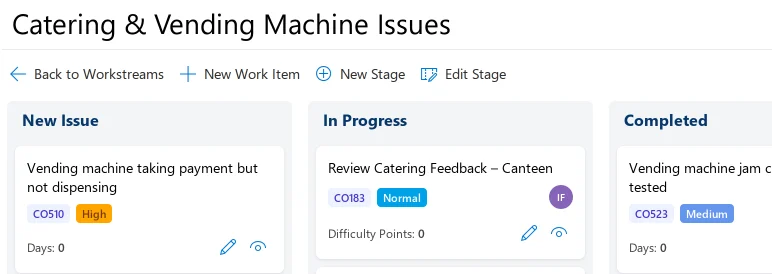
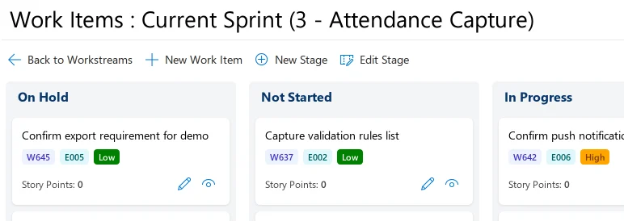
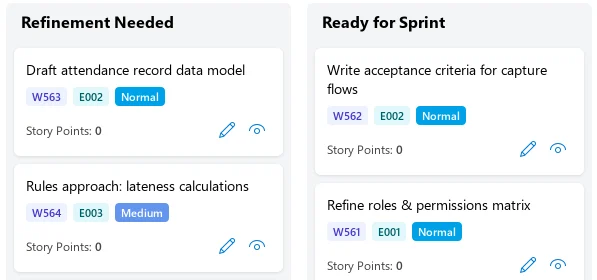
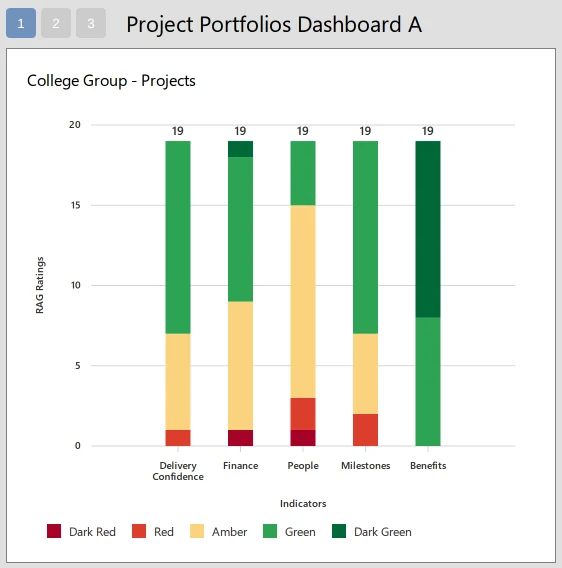

Workflows for everyday work. Sprints for planned delivery.
Group WorkStreams puts each stream of incoming work, such as complaints or HR requests, on its own Kanban board. Agile Sprints is for Scrum teams that plan their work in a backlog and deliver it in sprints.
An independent promoter of ZedX runs this site. ZedX is made by Swiftpro Corporation Ltd, and demo requests go to them.




Screens from the ZedX demo, which uses sample data for a college group.
Group WorkStreams gives each kind of work its own board
Complaints, catering faults, HR requests and finance queries can each become a workstream. Every workstream has its own Kanban board, with stages set for that work. In the demo, the complaints log has five stages and catering issues have three.
It suits operational teams that handle a steady flow of requests and cases. The workstreams list shows who owns each workstream and how many tasks are active. A dashboard counts the work items in each one and shows how many are critical.
See how Group WorkStreams works

Agile Sprints takes Scrum teams from backlog to release
Epics and user stories wait in a prioritised backlog. The team estimates each story in story points and pulls stories into a sprint up to its capacity.
During the sprint, a board shows what is in progress, finished or blocked, and stand-ups can be reported online. After each sprint the team can review completion, velocity and carried-over work. Releases can span several sprints.
See how Agile Sprints works


Which app fits your work?
Both apps put work on boards. Choose by how work reaches your team and how far ahead you plan it.
| Group WorkStreams | Agile Sprints | |
|---|---|---|
| How work arrives | All the time, as requests, cases, issues and jobs. | As epics and user stories in a prioritised backlog, planned in advance. |
| How it is planned | There is no fixed cycle. Items move through the workstream’s stages as people handle them. | In sprints. The team estimates stories in story points and fills each sprint up to its capacity. |
| The board | One board per workstream, with stages chosen for that work. | One board for the current sprint, with stages you can configure. |
| How progress is reviewed | Active tasks per workstream, and a dashboard of work items split into critical and non-critical. | In daily stand-ups and sprint reviews, using completion, velocity and carried-over work. |
Need both? The official Agile Sprints page suggests running Group WorkStreams alongside it, so operational and ad-hoc work stays out of the sprint.
Leaders follow progress in Project Portfolios
The boards belong to the teams doing the work. Leaders use a third ZedX app, Project Portfolios, where project managers send a structured update at agreed intervals, such as monthly or quarterly.
Every update follows the same format. It rates delivery confidence red, amber or green and adds a progress note, achievements, blockers, risks, dependencies and any support needed. Dashboards show delivery health across portfolios, programmes and projects, and trends show whether confidence is improving, stable or getting worse.
A project can link its workstreams to Group WorkStreams or Agile Sprints. Project Portfolios then sees their progress as a summary in each update. The individual tasks stay on the team’s board.
Project Portfolios also covers vision and objectives, a portfolio Gantt chart, Excel export, automatic reminders when updates are due and benefits tracking after delivery. Read about Project Portfolios on zedxapps.com


Sign-in, hosting and licensing
Both apps run on the ZedX Apps Platform with the other ZedX apps. These details come from the official platform page.
Sign-in and access
- Sign-in
- Single sign-on with Microsoft Entra ID. Organisations without Entra ID can use ZedX’s own sign-in instead.
- External users
- People outside your organisation can use their own Entra ID or a guest login.
- Permissions
- You can give people access to single apps or to modules within an app, and manage permissions in a hierarchy.
- One platform
- All ZedX apps share one login and one interface, and they work with each other. Your administrator adds apps from a store inside ZedX that lists the ones for your sector.
Hosting and integration
- Hosting
- Per-user and per-block licences include hosting. With an unlimited-user licence, ZedX runs on your own server or Azure subscription.
- Integration
- If ZedX runs on your own servers or Azure, Swiftpro Digital can connect it to other systems as a separate service. That includes Oracle, SAP ERP and, for education, Tribal.
- Technology
- A React front end and API, with a SQL Server database.
Licensing
- Per app, per user
- Software, support and hosting.
- Per app, in blocks of 10 or 100 users
- Software, support and hosting, at a lower cost per user.
- Per app, unlimited users
- Software and support, on your own server or Azure subscription.
- All current and future apps, unlimited users
- On your own server or Azure subscription.
Prices aren’t published. Ask Swiftpro through the contact form.
Before you ask for a demo
Who runs this website?
An independent promoter of ZedX. Swiftpro Corporation Ltd develops and owns ZedX. The product details here come from the official ZedX website, and the screenshots come from the ZedX demo.
What happens when I request a demo?
The button opens the contact form on zedxapps.com. Your message goes to Swiftpro, and their form says they will get back to you. The form doesn’t book a time for you.
Can we use both apps?
Yes. They share a login and run on the same platform. The official Agile Sprints page suggests using Group WorkStreams alongside it when a team mixes sprint work with operational and ad-hoc requests.
How much does it cost?
Prices aren’t published here. You can license each app per user or in blocks of users, or take an unlimited licence (see Licensing). Ask Swiftpro for prices.
Ask Swiftpro for a demo
Use the contact form on zedxapps.com. Tell Swiftpro which app you’re interested in and what work you want to run on it, and they’ll get back to you.